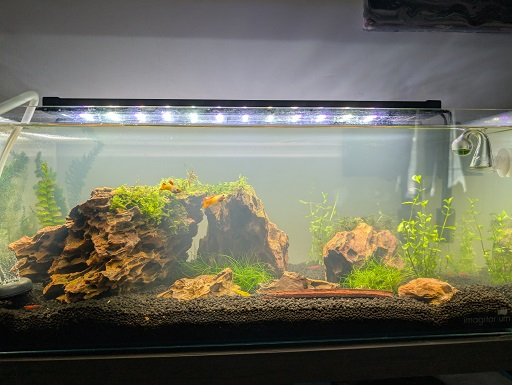
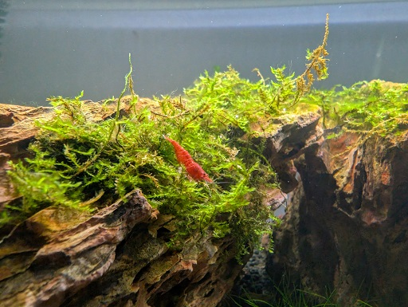
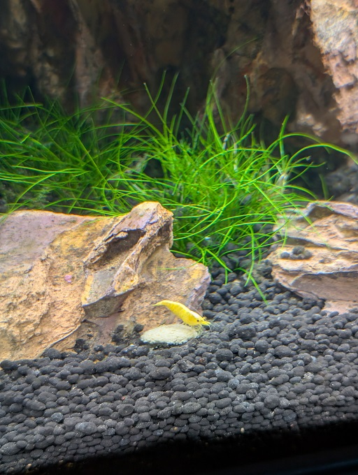
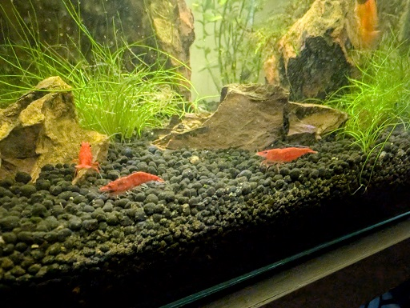

One of my biggest hobbies is taking care of Neocaridina shrimp. I really enjoy setting up and maintaining their planted tank, making sure the water conditions are just right for them to thrive. It's relaxing to watch them forage for food, clean the plants, and interact with each other. Their bright colors add so much life to the aquarium, and it's especially rewarding to see them breed and grow over time
Here are a few images from my planted tank.
Included in the tank are two tequila sunrise guppies.
  Here are a few cherries having a party.
